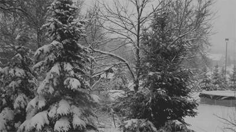

Extend Yourself - GarageBand: Spooky Story and Numerical Patterns
 Retell a Story with Music Only
Retell a Story with Music Only
Find a short story or poem that you love. Can you retell the story using only sounds?
Or use the instruments in GarageBand to help you create sounds for an action story or a love story.
Make Your Own Sound Effects
Instead of using the instruments or Sound Library try to create your own sound effects. You could explore using classroom items to make these different sounds. Here are some examples:

- Long wavy grass: run several sheets of paper or a brush across a desk.
- Deep cold river: splash your hands in a bowl of water – keep your device dry!
- Swirling whirling snowstorm: blow into the microphone of your device.
Create Your Own Form of Sheet Music
If you play an instrument or sing, you may be used to seeing time signatures represented on sheet music! Create your own form of sheet music. Model it after some of the features you used in the original challenge.
Make a Treasure Hunt
Dig into your creativity and imagination by creating a number pattern “treasure hunt” to share with a classmate. Use sounds for your inspiration! An example of a treasure hunt can be found here but you are free to create it in whatever way you would like.
